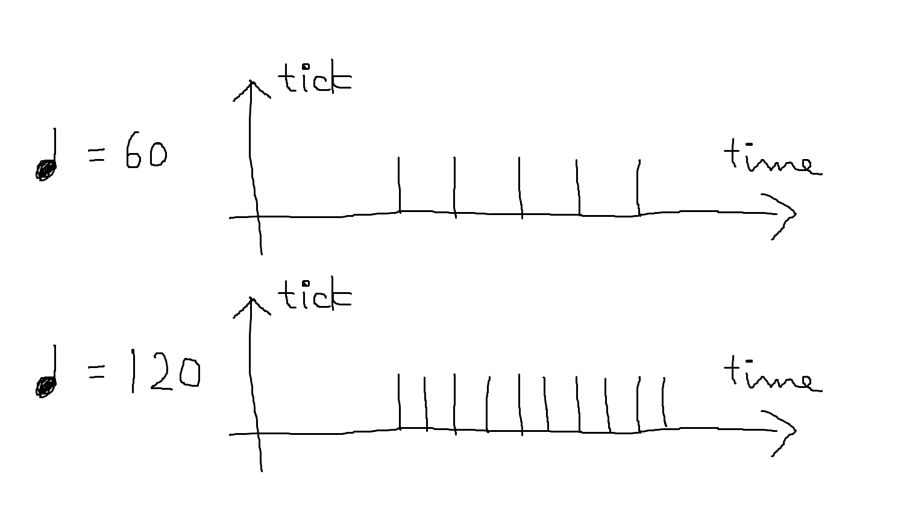
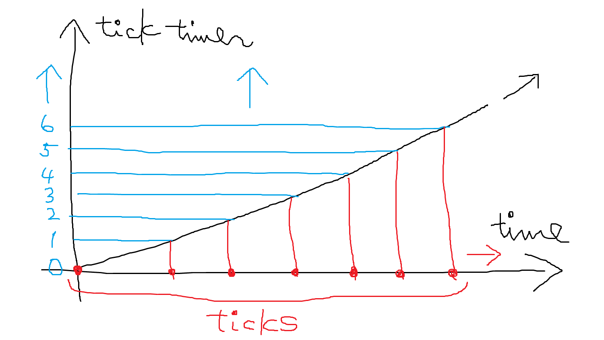
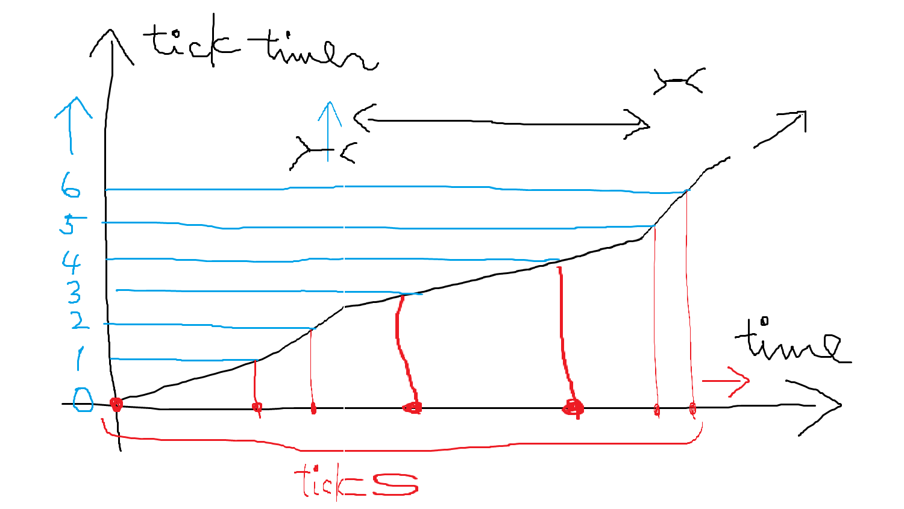

ここでは groove 機構について解説します。
groove 機構を使うと、いわゆる「跳ねたリズム」や「訛ったリズム」などの、特色のあるリズムを表現することができます。
groove 機構について解説する前に、まずはその前提となるシーケンサと tick の関係について解説します。
シーケンサの動作は、イベントの一種である tick を契機としています。通常、tick は一定の時間間隔で発生しています。tick が発生する頻度は、テンポが速いほど、また ticksPerBar の値が大きいほど、それらに比例して密になります。

tick の発生タイミングを制御しているのは tick タイマーという機構です。tick タイマーは小数値を保持するある種の積算器であり、システム全体で 1 つだけ存在し、次のように動作します：
そして、tick タイマーの値が整数値をまたいだ瞬間に tick が発生するようになっています（最初の tick は演奏開始の瞬間に発生します）。

これが、tick が一定の時間間隔で発生するしくみです。
そして groove は、tick タイマーの増加のペースに変調を加えます。
groove は入力として tick タイマーの現在の値を受け取り、それに変換を加えた値を出力します。groove が制御する対象のトラックでは、本来の tick タイマーの代わりに、変調された値の系列を使うようになります。
これにより、通常であれば一定間隔で発生する tick が、「訛って」発生するようになります。それは制御対象となるトラックの「ノリ」を変化させることになります。

groove は、tick タイマーの値に対する関数として動作することから、変調を行う groove の定義を groove 関数とも呼びます（ModDL の言語仕様上の「関数」とは異なるのでご注意ください）。
なお、tick タイマーは一定の値に達すると 0 にリセットされます。この一定の値を grooveCycle といい、文字通り groove の周期となります。
ここで例題として、跳ねたリズム、つまり、本来等しい長さのはずの音符が、交互に長くなったり短くなったりするリズムを取り上げます。
ここでは、16 分音符を 2:1
で跳ねさせてみます。つまり、c16c16c16c16 が
c12c24c12c24 のように演奏されるようにします。
まず、この跳ねたリズムの周期を考えます。連続する 16 分音符があるとき、最初のものは長く、次のものは短く、その次はまた長く…を繰り返すわけですから、周期は 16 分音符 2 つ分、つまり 8 分音符 1 つ分となります。これを tick 数に変換すると、(デフォルトでは ticksPerBar = 384 なので）tick 数は 384 / 8 = 48 です。したがって、grooveCycle を 48 とします。
これにより、tick タイマーは 0 以上 48 未満の値を取ることになります。
本来の tick は、tick タイマーがちょうど 0, 1, 2, …, 47 となった、または超えた瞬間に発行されます。この tick タイマーの値に変調を加えることで、目標とするリズムを作り出します。
ここで、x 軸に本来の tick タイマーの値、y 軸に変調後の tick タイマーの値をとったグラフを考えてみます。ここに描かれる曲線が groove 関数を表現しています。
この関数は次の条件を満たす必要があります：
even なリズムであれば、本来の tick タイマーの値をそのまま使うわけですから、groove 関数は となります。
では 2:1 で跳ねたリズムの場合、関数はどうなるでしょうか。
周期の 48 ticks を 2:1 に分けるということは、長い方の 16 分音符の長さは本来の 32 ticks 分、短い方は本来の 16 ticks 分の時間をそれぞれ占めることになります。
本来の 32 ticks 分の長さで、実際に発行される tick の数は 16 分音符 1 つ分、つまり 24 回であればよいわけですから、この関数は (32, 24) を通ればよいことになります。
これに加えて groove 関数のグラフが必ず通るべき 2 点 (0, 0) および (grooveCycle, grooveCycle) = (48, 48) があるので、結局 3 点 (0, 0), (32, 24), (48, 48) を通ればよいことになります。これを満たす関数はいろいろありますが、単純な 1 次関数の場合分けで実現することにすると、
のとき、
のとき、
となります（他にも 2 次関数で補間するなども考えられるので試してみてください。補間の方法に依って、16 分音符よりも細かい音符を使ったときの挙動が変わってきます）
TODO グラフ
グラフの大まかな見方として、 を境として、右下側を通ると「ためた」リズムに、左上側を通ると「走った」リズムになることは覚えておくと便利でしょう。
上の関数を groove
構築文で実装すると、次のようになります：
@grooveCycle 48
@groove ^G, ^a, =x=> if x < 32 // x < 0 や 48 <= x の値は来ないので考慮不要
then (24 / 32) * x
else (24 / 16) * x - 24先ほどの groove 関数は、さらに一般化することができます。n 分音符を r : (1 - r) で跳ねさせる groove 関数は以下のようになります：
これを groove
構築文で実装すると、次のようになります：
@let :ticksPerBar, 384
@ticksPerBar ticksPerBar
@grooveCycle 48
@groove ^G, ^a,
let n = 16;
let r = 2 / 3;
let ticks = ticksPerBar / n;
// 余分な計算を減らすため式を少し変形
=x=> if x < 2 * ticks * r
then x / (2 * r)
else x / (2 * (1 - r)) + (1 - 2 * r) / (1 - r) * ticksこの r の値は、実は groove トラックの MML
を使って変化させることができます。これにより、動的に変化する groove
なども実現できます。
@let :ticksPerBar, 384
@ticksPerBar ticksPerBar
@grooveCycle 48
// groove 定義の r にラベルを付与している以外は上と同じ
@groove ^G, ^a,
let n = 16;
let r = (2 / 3) @ r;
let ticks = ticksPerBar / n;
=x=> if x < 2 * ticks * r
then x / (2 * r)
else x / (2 * (1 - r)) + (1 - 2 * r) / (1 - r) * ticks
// 4 小節経過後は even にする
G [4 r1] yr,0.5
// その 4 小節後からまた少し跳ねる（3:2）
G [4 r1] yr,0.6跳ねたリズムを実現する groove 関数は /* TODO */ として組み込みライブラリに含まれているため、ここで説明したような内容を理解したり実装したりすることは必須ではありません。
先述のように、tick タイマーはシステムに 1 つだけ存在します。そして groove は唯一のタイマーの出力を変調するだけであり、タイマーそのものの動作を変えたり、タイマーの数を増やしたりはしません。したがって even なトラックと groove を適用したトラックが共存したり、異なる groove を適用したトラック同士が共存したりすることは可能です。また、そのようなトラック同士の演奏がずれていくこともありません（grooveCycle の先頭の tick は必ず同時になります）。
grooveCycle の先頭の tick を遅らせたり早めたりする groove は現在は定義できません。別途ディレイを挟むなどの方法をとってください。
t コマンドを使った方法跳ねたリズムを実現するには、MML の t
コマンドを使うこともできます。ただし、t
コマンドは全てのトラックに作用するので、トラックごとに跳ねの有無や程度を変えることはできません。
テンポ で で跳ねさせるには、 を求めた上で、 と を使ってテンポ変更を繰り返します。
たとえばテンポ 120 で 2:1 で跳ねさせる場合、 となります。これらの値を使って次のようにします：
a [0 t90r16 t180r16]